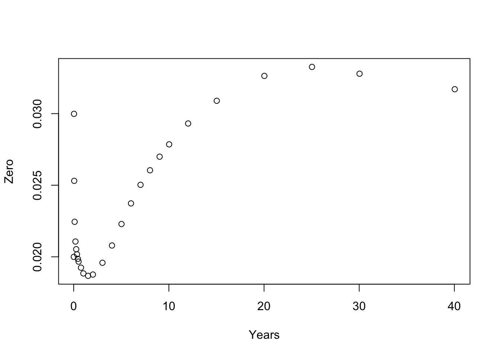

Implements basic financial market objects like currencies, currency pairs, interest rates and interest rate indices. You will be able to use Benchmark instances of these objects which have been defined using their most common conventions or those defined by International Swap Dealer Association (ISDA, http://www2.isda.org) legal documentation.
Basic objects
You can create instances of key currencies and currency pairs (and of course create your own implementations):
These come with implementations of handy methods:
library("lubridate")
to_fx_value(dates = ymd(20171230), tenor = "spot", x = AUDUSD())
#> [1] "2018-01-03"
to_fx_value(ymd(20171230), months(3), AUDUSD())
#> [1] "2018-04-03"You can create instances of key IBOR or ONIA interest rate indices:
These also come with implementations of handy methods:
Interest rates and discount factors
You can create and perform basic manipulation of interest rates and discount factors:
rr <- InterestRate(value = 0.01, compounding = Inf, day_basis = "act/365")
as_DiscountFactor(rr, d1 = ymd(20170120), d2 = ymd(20210120))
#> <DiscountFactor> 0.960763116514576, 2017-01-20--2021-01-20
# Convert to different rate basis
as_InterestRate(rr, day_basis = "act/360")
#> <InterestRate> 0.9863014%, CONTINUOUS, ACT/360
as_InterestRate(rr, compounding = 2, day_basis = "act/360")
#> <InterestRate> 0.9887373%, SEMI-ANNUAL, ACT/360
dd <- DiscountFactor(0.75, d1 = ymd(20170120), d2 = ymd(20210120))
as_InterestRate(dd, compounding = Inf, day_basis = "act/360")
#> <InterestRate> 7.088675%, CONTINUOUS, ACT/360Pricing objects
It is also possible to create and interpolate on zero coupon interest rate curves:
zc_df <- fmdata_example("zerocurve.csv")
values <- zc_df$dfs
starts <- as.Date(as.character(zc_df[["start"]]), "%Y%m%d")
ends <- as.Date(as.character(zc_df[["end"]]), "%Y%m%d")
dfs <- DiscountFactor(values, starts, ends)
zc <- ZeroCurve(dfs, starts[1], LogDFInterpolation())
plot(zc$pillar_times, zc$pillar_zeros, xlab = 'Years', ylab = 'Zero')
interpolate(zc, year_frac(starts[1], ends[3], "act/365"))
#> [1] 0.02530432
interpolate_zeros(zc, ends[3])
#> <InterestRate> 2.530432%, CONTINUOUS, ACT/365
interpolate_fwds(zc, ymd(20170331), ymd(20170630))
#> <InterestRate> 1.837274%, SIMPLE, ACT/365
interpolate_dfs(zc, ymd(20170331), ymd(20170630))
#> <DiscountFactor> 0.995440285935839, 2017-03-31--2017-06-30Further details can be found in this package’s help pages and vignettes (vignette(package = "fmbasics"))